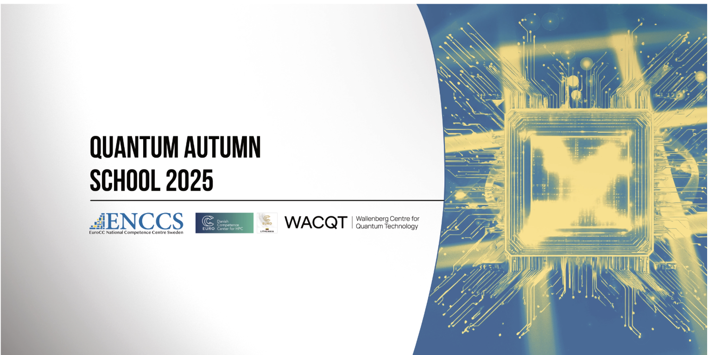
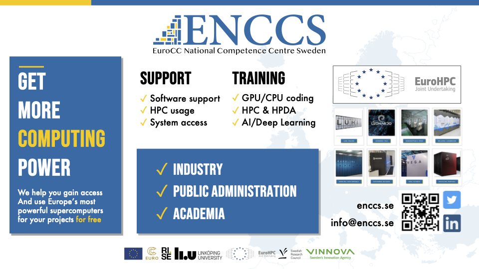

Quantum Autumn School 2025
Welcome to QAS2025!
Join us for an intensive week of quantum computing education, featuring hands-on tutorials, expert lectures, and European quantum hardware.
üìÖ November 3-7, 2025 | üìç Stockholm, Sweden (Address details shared in email communications)
üéØ Day 0: Pre-Event Information - Start Here!

About the school
The Quantum Autumn School 2025 (QAS2025) brings together researchers, students, and industry professionals to explore cutting-edge developments in quantum computing. This 5-day event offers a unique combination of theoretical foundations and practical experience emphasising the integration with High Performance Computing, featuring expert-led sessions that cover a range of topics from theoretical foundations to practical applications. Expect a blend of lectures, hands-on exercises, and networking opportunities, including the chance to interact with stakeholders involved with the EuroHPC JU quantum computers. It will provide a valuable opportunity to explore the latest advancements in quantum computing, where you’ll learn about up-to-date topics and European quantum efforts, especially in light of the eight EuroHPC JU quantum computers announcements, and get hands-on experience.
Nordic Quantum Autumn School 2025 - Schedule
Day 0: before you arrive
Everything you need to know before the Quantum Autumn School 2025
Important
Some info is sent only via email to registered participants:
Zoom connection links for online school participation and pre-event check-in
IQM Resonance exclusive signup link for access to a specific project with credits on IQM resonance cloud
Calendar invites (.ics files) for all calls
Zulip workspace invitation (optional) for communicating with instructors and fellow participants
Nextcloud markdown file links for submitting questions during lectures
Welcome!
Thank you for registering for the Quantum Autumn School 2025! Whether you’re joining us in-person in Stockholm or online, we’re excited to have you participate in this intensive week of quantum computing interaction.
Quick details
Dates: November 3-7, 2025
Venue (In-person): Stockholm, Sweden (address details shared in email communications)
DONE: Pre-Event Check-in: October 29, 2025 at 11:00 AM Stockholm time (Zoom link in email)
School Website: https://enccs.github.io/qas2025/
Note
Few logistics!:
After each talk, there will be time for questions. Please save your questions until the end of each session to keep the flow and allow speakers to complete their presentations. We want to make sure everyone gets a chance to ask!
You can write questions during lectures using Nextcloud markdown files (links shared in email communication)
Can’t make it? Let us know!
If your plans have changed, please inform us so we don’t order unnecessary food for in-person participants. It’s not too late to switch to in-person attendance if you’d like to join us in Stockholm! You can also update us if you will select few days to attend.
Access to quantum hardware
IQM Resonance Cloud Access
We have exciting news about generous access to quantum computing hardware thanks to IQM!
Platform Access:
Visit IQM Resonance to access the quantum computing platform
Use the exclusive signup link from your registration email for QAS2025 project access
Exclusive Access for QAS2025 Participants:
Special project access on IQM Resonance cloud
Exclusive signup link provided in your registration email (check your email)
What you get:
Access to the QAS2025 project (we’ll add you after you sign up)
Immediate access to the default freemium tier (which is already excellent!)
Hands-on experience with real European quantum hardware
Pulse-level access will be unlocked during the school for advanced quantum control
How to get started:
Find the exclusive signup link in your email
Create your account using the QAS2025 link
Start exploring immediately with the freemium access
We’ll ensure you’re added to the project during the school
Many thanks to IQM for their generosity in providing this access!
Environment setup to run calculations yourself
How to install qrisp and run simple calculations
Get ready for the school with these optional preparation materials and resources.
Important
Don’t worry if you don’t complete all of this—we’ll guide you through the essentials during the school!
The goal is to give you a head start, not to overwhelm you. Even if you arrive with no preparation, you’ll be able to follow along and learn.
Easiest option: Use Binder (recommended for beginners)
No installation needed! Use Binder to run notebooks directly in your browser - it’s free, instant, and pre-configured with everything you need. See the Qrisp Starter Tutorial for the Binder link.
Local setup (for those who prefer to run on their own machine)
Watch this short video by Stefan from IQM to learn how to set up your environment for the school:
Covers Jupyter notebook setup and basic quantum computing examples
Great introduction to get you started
Tip
If you’re new to Jupyter notebooks, don’t worry! Stefan’s video above provides a great introduction, and we’ll walk through everything during the school.
Get familiar with Qrisp
Explore the European quantum SDK before the school:
Qrisp - European quantum algorithm development package
Check the tutorials and examples on Qrisp
We’ll have a special focus on Qrisp during the school
Great opportunity to get a head start on this powerful tool
Hands-on: Qrisp starter notebook
Get practical experience with our interactive Qrisp Starter Tutorial!
What you’ll learn:
Setting up Qrisp with IQM backend support
Running quantum algorithms on real IQM hardware
Comparing simulator vs. mock backend vs. real quantum hardware results
Understanding NISQ (Noisy Intermediate-Scale Quantum) effects
Try the Interactive Tutorial
Visit the Qrisp Starter Tutorial page to:
Run instantly with Binder - free, no installation, runs in your browser
View the complete notebook with outputs
Download it to run on your own machine
Follow step-by-step instructions
Recommended: Use Binder during the school! It’s pre-configured with all dependencies (qrisp, IQM interface) and requires zero setup.
Previous schools & materials
Explore materials from our previous quantum schools to get familiar with the topics and format:
Available at: https://enccs.se/lessons/
Browse through previous quantum computing lessons
Get a feel for our teaching style and content depth
Recommended readings
Strengthen your quantum computing foundations with these resources:
Ronald de Wolf’s Quantum Computing Course:
Ronald de Wolf (CWI and ILLC) offers excellent quantum computing course materials
Course website: https://homepages.cwi.nl/~rdewolf/qc25.html
Lecture notes (PDF): https://homepages.cwi.nl/~rdewolf/qcnotes.pdf
Highly recommended reading to strengthen your quantum computing foundations
Quantum Algorithm Zoo:
Quantum Algorithm Zoo - Excellent summary of available quantum algorithms and related implementations
Citation: BibTeX reference
Comprehensive catalogue of quantum algorithms organized by application domain
IQM Quantum School
IQM 3-Day Online School (December 2-4)
We strongly recommend attending the IQM Quantum School to complement your learning from QAS2025!
Details:
Dates: December 2-4, 2025
Format: Online, 3-day school
Signup:
https://resonance.meetiqm.com/sign-up/quantumschool
Why attend: Together with the Quantum Autumn School, this will give you an excellent skillset to start developing your quantum computing use cases. It’s a perfect follow-up to reinforce and expand on what you’ll learn during QAS2025.
Fun session for in-person participants
PechaKucha Evening - Wednesday, November 5th
Time: Wednesday, November 5th at 16:00 Location: Stockholm venue (address details shared in email communications)
To balance all that brainwork with some light-hearted fun, we warmly invite you to the Social PechaKucha Evening!
What is PechaKucha?
Let’s unwind together, share stories, and get to know each other beyond the school. Whether it’s a hobby, a fun interest, a personal journey, or even your research—PechaKucha is the perfect format to present it!
Format:
Maximum 5 minutes per presenter
Traditionally: 20 slides, 20 seconds each (but flexible)
Visual storytelling: Focus on images and stories, minimal or no bullet points
Topics: Anything you’re passionate about—hobbies, interests, personal journeys, or your research
Learn More:
What is PechaKucha? - Lark
What makes a great PechaKucha Presentation - Intro video
We’re looking forward to seeing your PechaKuchas!
Note
Food Planning: We’re ordering lots of good food for in-person participants. If you need to cancel your in-person attendance, please let us know so we don’t waste food!
Pre-event check-in meeting
Mandatory Check-In Call
Date: October 29, 2025 Time: 11:00 AM Stockholm time Format: Zoom (link sent via email)
We’d like to have a quick meeting with you to:
Answer any questions you might have
Make sure everything is ready for the school
Walk through any technical setup if needed
Find the Zoom connection details in your email (also available as an .ics calendar file).
Online participation details
Zoom Connection for School Days
All school days (November 3-7, 2025) will be accessible via Zoom for online participants.
Connection Details:
Meeting ID and Passcode sent via email
Join URL provided in registration email
Also available as an .ics calendar file attachment
Please check your email for the complete Zoom connection information.
Tip
Save the Zoom link and meeting details somewhere easily accessible—you’ll need them every day of the school!
Let’s stay connected
Join our community and stay updated!
Stay in the loop with ENCCS for updates, training opportunities, and news about connecting HPC, AI, and quantum computing!
üåê Visit our website:
ENCCS Website - HPC services, on-boarding, training courses, webinars, tutorials, blog posts, and upcoming events
üìß Subscribe to our newsletter:
ENCCS Newsletter - Get monthly updates delivered to your inbox
üí¨ Follow us on social media:
LinkedIn - Latest news, events, and professional updates
YouTube - Tutorials, webinars, and educational content
Stay connected with the European quantum computing community!
Quick links summary
Here’s everything you need in one place:
Resource |
Link/Location |
|---|---|
School Website |
|
Agenda (PDF) |
|
Zoom Links |
Sent via email |
IQM Resonance Signup |
Exclusive link in email |
Pre-Event Check-in |
Oct 29, 11:00 AM (Zoom in email) |
IQM Academy |
|
Qrisp SDK |
|
ENCCS Lessons |
|
Venue Address |
Details shared in email communications |
Questions?
If you have any questions or concerns before the school starts, don’t hesitate to reach out to the organizing team via email or Zulip (optional).
See also
Next Steps:
Return to the main landing page
Attend the pre-event check-in on October 29
Review the full schedule
Check out Day 1 agenda to see what’s coming
Optional: Start exploring the preparation materials above
Qrisp Starter Tutorial
Get hands-on experience with Qrisp and IQM quantum hardware
This interactive notebook introduces you to quantum programming with Qrisp and shows you how to run quantum algorithms on real IQM hardware. You’ll learn the differences between simulators, mock backends, and actual quantum computers.
Run notebooks during the school
You can run this notebook and other code examples during the school using Binder - just click the badge below:

Binder is free, requires no installation, and runs directly in your browser! It’s pre-configured with all necessary dependencies (including qrisp and IQM interface), so you can start coding immediately without any setup.
Or download qrisp-starter.ipynb to run locally.
The notebook is self-contained and portable - works with Binder or locally!
What you’ll learn
Setting up Qrisp with IQM backend support
Running quantum algorithms on real IQM hardware
Comparing simulator vs. mock backend vs. real quantum hardware results
Understanding NISQ (Noisy Intermediate-Scale Quantum) effects
Prerequisites
Python 3.10, 3.11, or 3.12 (NOT 3.13+ due to Qrisp compatibility)
Jupyter notebook environment (VS Code or JupyterLab)
IQM API token from IQM Resonance
IQM Token Setup
You can generate your IQM token from IQM Resonance and use it in two ways:
Save as file: Create a
token.txtfile in the same directory as your notebook and save your token therePaste directly: Copy and paste your token explicitly in the notebook code
The notebook will show you how to read from the token file or use it directly.
Important
Credit Costs: Running on real IQM hardware (Sirius) consumes credits at 0.30 credits/second. The notebook includes a free mock backend and local simulator for testing without using credits.
Interactive tutorial
View the complete notebook on the next page →
The notebook is rendered on a separate page with syntax highlighting, outputs, and full interactivity preview. Click the link above or navigate using the sidebar.
Tip
After viewing the notebook, don’t forget to download it using the link at the top of this page to run it on your own machine!
See also
Related resources:
Day 0: Pre-Event Information - More preparation materials
Qrisp Official Website - Documentation and examples
IQM Academy - Additional quantum computing tutorials
Getting started with Qrisp on IQM
Download this Notebook
Download qrisp-starter.ipynb to run locally on your machine.
Qrisp is a quantum programming language build around the concept of quantum variables. It is designed to be a high-level language that is easy to use and understand. Qrisp is a great tool for beginners to learn quantum computing and for experts to quickly prototype quantum algorithms. It offers a fresh take on quantum programming. You can learn more about Qrisp on the official website: https://qrisp.eu/.
In this notebook, you will learn how to …
… get started with Qrisp.
… run a Qrisp program on an IQM backend both mock and real device.
This notebook is from https://www.iqmacademy.com/learn/qrisp/00-intro/ with few edits to make it simpler to use on IQM device Sirius
note: you can run this notebook with token.txt file next to it
Installing the necessary packages
In order to get started, make sure you have the appropriate packages installed. Make sure that you install qrisp with the iqm extension.
%%capture
%pip install qrisp[iqm]
# On some systems, you may need to use quotes around the extras:
#!pip install "qrisp[iqm]"
Imports
In order to use Qrisp, you need to import the qrisp package. You can do this by running from qrisp import *
ofcourse it is not the best practice to import everything like this, but for the sake of simplicity in this notebook we do it.
from qrisp import *
from qrisp.interface import IQMBackend
Qrisp provides advanced quantum data types such as QuantumFloat that we will use in this example. In this example we wil encode a 2 it will multiply it with itself and then measure the result.
Let’s run it on a simulator first.
a = QuantumFloat(2)
a[:] = 2
a.get_measurement()
{2: 1.0}
Running on IQM Resonance
Now let’s run circuits on IQM Resonance. IQM provides both real quantum hardware and a mock backend for testing.
Token Authentication
To access IQM quantum computers, you need an API Token. Get one at
by clicking “Create Token” in the side panel.
Note: Here, We will use IQM Sirius (16 qubits, 0.30 credits/second) as it’s the most cost-effective option and can perform this demo efficiently.
from pathlib import Path
from getpass import getpass
token_file = Path('token.txt')
if not token_file.exists():
token = ""
while token == "":
token = getpass("Please enter the token from that you generated from IQM resonance")
token_file.write_text(token)
else:
print("Reusing existing token.txt")
token = token_file.read_text()
# IQM Backend for Sirius (mock Hardware)
iqm_mock = IQMBackend(api_token = token, device_instance = "sirius:mock")
# IQM Backend for Sirius (real Hardware)
iqm_sirius = IQMBackend(api_token = token, device_instance = "sirius")
/srv/conda/envs/notebook/lib/python3.10/site-packages/iqm/iqm_client/iqm_client.py:142: UserWarning: Your IQM Client version 28.0.0 was built for a different version of IQM Server. You might encounter issues. For the best experience, consider using a version of IQM Client that satisfies 29.2.0 <= iqm-client < 30.0.
warnings.warn(version_incompatibility_msg)
/srv/conda/envs/notebook/lib/python3.10/site-packages/iqm/iqm_client/iqm_client.py:142: UserWarning: Your IQM Client version 28.0.0 was built for a different version of IQM Server. You might encounter issues. For the best experience, consider using a version of IQM Client that satisfies 30.1.0 <= iqm-client < 31.0.
warnings.warn(version_incompatibility_msg)
Compare all three runs: Simulator vs Mock vs Real Hardware
This will consume credits (0.30 credits/second).
# local simulator
a = QuantumFloat(2)
a[:] = 2
sim_result = a.get_measurement()
print(f"Qrisp Simulator: {sim_result}")
print("Simulator: Perfect (no noise)")
Qrisp Simulator: {2: 1.0}
Simulator: Perfect (no noise)
# mock backend on IQM resonance
a = QuantumFloat(2)
a[:] = 2
mock_result = a.get_measurement(backend=iqm_mock, shots=500)
print(f"IQM Mock Backend: {mock_result}")
print("Mock: Simulates IQM backend behavior (with noise model), zero credits used")
IQM Mock Backend: {0: 1.0}
Mock: Simulates IQM backend behavior (with noise model), zero credits used
Tip
Always test on the mock backend (above) first before using real hardware to avoid wasting credits!
# real hardware backend on IQM sirius
a = QuantumFloat(2)
a[:] = 2
iqm_result = a.get_measurement(backend=iqm_sirius, shots=500)
print(f"IQM Sirius (Real): {iqm_result}")
print("Real Hardware with actual NISQ noise")
IQM Sirius (Real): {2: 0.952, 0: 0.028, 3: 0.018, 1: 0.002}
Real Hardware with actual NISQ noise
The Quantum Autumn School 2025 Organisation Team ENCCS, EuroCC Denmark & Lithuania, with support from WACQT
Nordic Quantum Autumn School 2025 - Schedule
Note
Date: November 3-7, 2025
Location: Stockholm, Sweden (address details shared in email communications)
Organizers: ENCCS, NCC Denmark, NCC Lithuania
Overview
The Nordic Quantum Autumn School 2025 is a 5-day intensive program covering quantum computing fundamentals, variational quantum algorithms, and hands-on experience with quantum hardware and simulators.
Daily schedule
Monday, November 3rd
| Time | Session |
|---|---|
| 9:00-9:30 | Arrival and Coffee |
| 9:00-10:00 | Welcome & Introduction to QAS2025 Thor Wikfeldt (ENCCS/RISE, SE) |
| 10:00-10:40 | Introduction to the European Hybrid classical/quantum HPC+AI+QC ecosystem. LUMI-Q Quantum Flagship Mikael Johansson (CSC, FI) |
| 10:40-11:00 | Coffee Break |
| 11:00-12:00 | Overview of the HPC/QC software stack, from ready-made Q-libraries for common tasks to circuit level assembly and hardware-level coding Miroslav Dobsicek (Chalmers Next Labs, SE) |
| 12:00-13:00 | Lunch |
| 13:00-14:00 | Quantum gates and circuits Giulia Ferrini (MC2, Chalmers/WACQT, SE) |
| 14:00-15:00 | Quantum gates, circuits and algorithms Giulia Ferrini, Laura Garcia Alvarez (MC2, Chalmers/WACQT, SE) |
| 15:00-15:30 | Coffee Break |
| 15:30-16:30 | Quantum Information Theory introduction, building quantum algorithm, QFT, ... Stefano Markidis (KTH, SE) |
| 16:30-17:30 | Quantum error mitigation (QEM) applied to simulation of physical systems Göran Wendin (RISE, SE) |
| 18:00-20:00 | Reception, mingling |
Tuesday, November 4th
| Time | Session |
|---|---|
| 9:00-10:00 | Introduction to variational quantum algorithms: QAOA Franz Fuchs (SINTEF, UiO, NO) |
| 10:00-10:40 | In-depth description of variational quantum algorithms: QAOA Franz Fuchs (SINTEF, NO) |
| 10:40-11:00 | Coffee Break |
| 11:00-12:00 | Integrating quantum processing units with supercomputers Speaker |
| 12:00-13:00 | Lunch |
| 13:00-14:00 | Getting started with algorithm development on actual quantum hardware using IQM Resonance Stefan Seegerer (IQM) |
| 14:00-15:00 | Developing quantum algorithms with qrisp, the next generation of quantum algorithm development Stefan Seegerer (IQM) |
| 15:00-15:30 | Coffee Break |
| 15:30-16:30 | Interactive tutorial: experiments with quantum gates, circuits and algorithms (qiskit simulation) Tutorial, simulation (Laura) |
| 16:30-17:30 | Interactive tutorial: Execution of simple examples on optimization with QAOA (simulation) Hands-on (Franz) |
Wednesday, November 5th
| Time | Session |
|---|---|
| 9:00-10:00 | Introduction to variational quantum algorithms: VQE and beyond (QPE, ..., SQD) Juan (ENCCS, RISE, SE) |
| 10:00-10:40 | VQE applied to use cases for quantum chemistry/drug discovery: in-depth description of specific use case Panagiotis Barkoutsos (IonQ) |
| 10:40-11:00 | Coffee Break |
| 11:00-12:00 | High Ground State Overlap via Quantum Embedding Methods Matthias Christandl (København U, DK) |
| 12:00-13:00 | Lunch |
| 13:00-14:00 | Controlling a quantum computer using pulses Stefan Seegerer (IQM) |
| 14:00-15:00 | Interactive tutorial on the devices (LUMI-Q/IQM devices) Stefan Seegerer (IQM) |
| 15:00-15:30 | Coffee Break |
| 15:30-16:30 | Interactive tutorial: Execution of simple quantum chemistry examples using VQE on simulation vs. LUMI-Q/IQM Hands-on (IQM team/Panos) |
| 16:30-17:30 | Buffé dinner |
Thursday, November 6th
| Time | Session |
|---|---|
| 9:00-10:00 | Introduction to Trapped-ion Panagiotis Barkoutsos (IonQ) |
| 10:00-10:40 | Atomistic simulations on quantum accelerated supercomputing Karim (ENCCS/RISE, SE) |
| 10:40-11:00 | Coffee Break |
| 11:00-12:00 | Accelerated Quantum Supercomputing using NVIDIA CUDA-Q Esperanza Cuenca-Gómez |
| 12:00-13:00 | Lunch |
| 13:00-14:00 | Quantum error-correction (QEC) Mats Granath (Göteborg University) |
| 14:00-15:00 | Quantum monte carlo and quantum finance Björn Löfdahl (SEB) |
| 15:00-15:30 | Coffee Break |
| 15:30-16:30 | Interactive tutorial: Quantum finance, Classical Monte Carlo on a QC, Quantum Amplitude Estimation (QAE) Björn Löfdahl & team |
| 16:30-17:30 | Quantum Reservoir computing Ruben Pariente Bassa (SINTEF, NO) |
| 17:30-18:00 | PechaKucha presentations and posters |
| 18:00-20:00 | Buffé dinner |
Friday, November 7th
| Time | Session |
|---|---|
| 9:00-10:00 | Quantum Neural Networks (lecture) Stefano Markidis (KTH, SE) |
| 10:00-10:40 | Hands-on QNNs using pennylane/classification (tutorial) Stefano Markidis (KTH, SE) |
| 10:40-11:00 | Coffee Break |
| 11:00-12:00 | Interactive tutorial: Quantum error-correction (QEC) hands-on Mats Granath team (Göteborg University) |
| 12:00-13:00 | Lunch |
| 13:00-14:00 | Towards 2045: Do we still talk about Quantum superiority? Panel discussion |
| 14:00-15:00 | Closing - The end |
This schedule is subject to change. Please check for updates regularly.
PechaKucha Evening
Time: Wednesday, November 5th at 16:00 Location: Stockholm venue (address details shared in email communications)
To balance all that brainwork with some light-hearted fun, we warmly invite you to the Social PechaKucha Evening!
What is PechaKucha?
Let’s unwind together, share stories, and get to know each other beyond the school. Whether it’s a hobby, a fun interest, a personal journey, or even your research—PechaKucha is the perfect format to present it!
Format
Maximum 5 minutes per presenter
Traditionally: 20 slides, 20 seconds each (but flexible)
Visual storytelling: Focus on images and stories, minimal or no bullet points
Topics: Anything you’re passionate about—hobbies, interests, personal journeys, or your research
Learn More
What is PechaKucha? - Lark
What makes a great PechaKucha Presentation - Intro video
We’re looking forward to seeing your PechaKuchas!
Note
Food Planning: We’re ordering lots of good food for in-person participants. If you need to cancel your in-person attendance, please let us know so we don’t waste food!
For In-Person Participants Only
This is a fun social event for in-person participants in Stockholm. Online participants are welcome to prepare presentations for future quantum events!
Day 1 - Monday, November 3rd
Learning Track: welcome and basics, Quantum computing fundamentals, introduction from information theory perspictive, hardware overiew
Arrival and coffee
Time: 8:30-9:15
Welcome setup and registration for participants arriving at RISE KTH “Innoversum” room.
Welcome & introduction to QAS2025
Speaker: Thor Wikfeldt (ENCCS/RISE, SE)
Time: 9:15-09:40
and introduction to the school and
Welcome to the Nordic Quantum Autumn School 2025! This opening session will introduce participants to the school, the structure, learning outcomes and logistics. An introduction about ENCCS and EuroHPC-JU as well with an overview of the five-day program, introduce the instructors, and set expectations for the intensive quantum computing week ahead.
Introduction to MIMER AI Factory
Speaker: Thor Wikfeldt (MIMER/RISE, SE)
Time: 9:40-10:00
You will get a welcoming message from the director of MIMER AI factory and understand more details on the AI factory initiative.
Introduction to the European HPC+AI+QC ecosystem. LUMI-Q Quantum Flagship
Speaker: Mikael Johansson (CSC, FI)
Time: 10:00-11:00
This session provides a comprehensive overview of the European landscape for hybrid classical/quantum high-performance computing. We’ll explore the LUMI-Q Quantum Flagship initiative and discuss how quantum computing is being integrated into the broader European HPC and AI ecosystem. Participants will learn about current infrastructure, future developments, and opportunities for accessing quantum resources.
Coffee break
Time: 10:40-11:00
Overview of the HPC/QC software stack, from ready-made Q-libraries for common tasks to circuit level assembly and hardware-level coding
Speaker: Miroslav Dobsicek Time: 11:00-12:00
A technical deep-dive into the software ecosystem that connects classical high-performance computing with quantum computing. This session covers the full stack from ready-made quantum libraries for common tasks down to circuit-level assembly and hardware-level programming.
Lunch
Time: 12:00-13:00
Quantum gates, circuits and algorithms
Speakers: Juan de Gracia Triviño (ENCCS/RISE, SE) Time: 13:00-14:00
Building on the previous session, we’ll explore how quantum circuits are used to implement quantum algorithms. This session bridges the gap between basic gate operations and practical quantum algorithms, showing how circuit design principles apply to real quantum computing problems.
Quantum gates and circuits
Speaker: Giulia Ferrini (MC2, Chalmers/WACQT, SE)
Time: 13:00-14:00
Introduction to the fundamental building blocks of quantum computing. This session covers basic quantum gates, how they manipulate qubits, and how gates are combined to create quantum circuits.
Coffee break
Time: 15:00-15:30
Quantum Information Theory introduction, building quantum algorithm, QFT, …
Speaker: Stefano Markidis (KTH, SE)
Time: 15:30-16:30
An introduction to the theoretical foundations of quantum information processing. This session covers key concepts including quantum superposition, entanglement, and quantum measurements. We’ll discuss the Quantum Fourier Transform (QFT) and other fundamental quantum algorithms, providing the theoretical background needed for advanced quantum computing applications. This is an excellent foundation to learn how to build a quantum algorithm.
From qubits 2000 to Nobel Prize 2025
Speaker: Göran Wendin (RISE, SE)
Time: 16:30-17:30
Learn about the technological advances that led to the recent nobel prize winning
Reception & mingling
Time: 18:00-20:00
Welcome reception and networking event for all participants and instructors.
Day 2 - Tuesday, November 4th
Learning Track: Basic/Intermediate - variational algorithms, optimization, QAOA and overview on hybrid use cases
Introduction to variational quantum algorithms: VQE and beyond (OPE, …, SQD)
Speaker: Juan de Gracia Triviño (ENCCS/RISE, SE) Time: 9:00-10:00
Comprehensive overview of Variational Quantum Eigensolvers (VQE) and related algorithms including Quantum Phase Estimation (QPE) and quantum simulation methods. This session covers the theoretical foundations of variational quantum algorithms and their applications to quantum chemistry and materials science.
interactive tutorial: experiments with quantum gates, circuits and algorithms (qrips simulations)
Speaker: Juan de Gracia Triviño (ENCCS/RISE, SE) Time: 10:00-10:40
Interactive tutorial on implementing quantum gates, circuits and algorithms using Qrisp SDK. This comprehensive session provides hands-on experience with quantum programming, covering circuit construction, simulation, and algorithms.
Coffee break
Time: 10:40-11:00
Opportunities for extending quantum computing through subspace, embedding and classical molecular dynamics techniques
Speaker: Thomas M. Bickley (UCL, UK) Time: 11:00-12:00
The advent of hybrid computing platforms consisting of quantum processing units integrated with conventional high-performance computing brings new opportunities for algorithm design. By strategically offloading select portions of the workload to classical hardware where tractable, we may broaden the applicability of quantum computation in the near term. In this talk, we review techniques that facilitate the study of subdomains of chemical systems with quantum computers and present a proof-of-concept demonstration of quantum-selected configuration interaction deployed within a multiscale/multiphysics simulation workflow leveraging classical molecular dynamics, projection-based embedding and qubit subspace tools. This allows the technology to be utilised for simulating systems of real scientific and industrial interest, which not only brings true quantum utility closer to realisation but is also relevant as we look forward to the fault-tolerant regime.
Lunch
Time: 12:00-13:00
Getting started with algorithm development on actual quantum hardware using IQM Resonance
Speaker: Stefan Seegerer (IQM)
Time: 13:00-14:00
In this session you will be learning how to execute quantum circuits on actual hardware with IQM’s cloud-accessible Resonance platform. You will not only run your first experiments but also acquire tips and tricks on how to get the most out of the hardware.
Developing quantum algorithms with qrisp—the next generation of quantum algorithm development
Speaker: Stefan Seegerer (IQM) Time: 14:00-15:00
This hands-on session introduces qrisp’s high-level, Pythonic workflow that converts mathematical intent directly into resource-optimized quantum circuits. Participants will prototype variational and fault-tolerant routines, run it on simulators and real hardware and experience first hand how qrisp empowers you to develop novel quantum algorithms.
Coffee break
Time: 15:00-15:30
QAOA - Theory
Speaker: Ruben Pariente Bassa (SINTEF, NO) Time: 15:30-16:30
More in-depth into the Quantum Approximate Optimization Algorithm (QAOA), one of the most promising near-term quantum algorithms. This session covers theoretical foundations of QAOA, its applications to combinatorial optimization problems, and why it’s particularly suited for NISQ devices.
Day 3 - Wednesday, November 5th
Learning Track: Intermediate - Variational algorithms, Molecules, VQE use cases
Variational Algorithms; Designing use cases for near term quantum algorithms
Speaker: Panagiotis Barkoutsos (IonQ)
Time: 09:00-10:00
Key topics: how to design a use case for a near term quantum algorithms, how one can exploit the currently available quantum hardware to the maximum, examples of use cases in chemistry and protein folding
Excursion session: Controlling a quantum computer using pulses
Speaker: Stefan Seegerer (IQM)
Time: 10:00-10:40
Leave the gate model behind and dive into the microwave layer where quantum logic is born. Through interactive demos you’ll be gaining an intuitive feel for how precise analog signals steer digital-era quantum computation.
Coffee break
Time: 10:40-11:00
LUMI-Q/VLQ presentation
Speaker: Miroslav Dobsicek Time: 11:00-11:30
Overview on LUMI-Q consortium and EuroHPC-JU VLQ quantum device overview
Longer Lunch
Time: 11:30-13:00
How to use quantum computers for biomolecular free energies
Speaker: Matthias Christandl (København U, DK)
Time: 13:00-14:00
Free energy calculations are at the heart of physics-based analyses of biochemical processes. They allow us to quantify molecular recognition mechanisms, which determine a wide range of biological phenomena from how cells send and receive signals to how pharmaceutical compounds can be used to treat diseases. Quantitative and predictive free energy calculations require computational models that accurately capture both the varied and intricate electronic interactions between molecules as well as the entropic contributions from motions of these molecules and their aqueous environment. However, accurate quantum-mechanical energies and forces can only be obtained for small atomistic models, not for large biomacromolecules. Here, we demonstrate how to consistently link accurate quantum-mechanical data obtained for substructures to the overall potential energy of biomolecular complexes by machine learning in an integrated algorithm. We do so using a two-fold quantum embedding strategy where the innermost quantum cores are treated at a very high level of accuracy. We demonstrate the viability of this approach for the molecular recognition of a ruthenium-based anticancer drug by its protein target, applying traditional quantum chemical methods. As such methods scale unfavorable with system size, we analyze requirements for quantum computers to provide highly accurate energies that impact the resulting free energies. Once the requirements are met, our computational pipeline FreeQuantum is able to make efficient use of the quantum computed energies, thereby enabling quantum computing enhanced modeling of biochemical processes. This approach combines the exponential speedups of quantum computers for simulating interacting electrons with modern classical simulation techniques that incorporate machine learning to model large molecules.
Pre-panel discussion
Moderator: Göran Wendin (RISE, SE) Time: 14:00-14:30
Let’s spark topics then continue talking about during the following coffee break!
Coffee break
Time: 14:30-15:00
Towards 2045: Do we still only talk about Quantum superiority?
Moderator: Göran Wendin (RISE, SE) Time: 15:00-16:00
The panel discussion
PechaKucha presentations
Time: 16:00-17:30
To balance all that brainwork with some light-hearted fun, we warmly invite you to the Social PechaKucha Evening!
What is PechaKucha?
Let’s unwind together, share stories, and get to know each other beyond the school. Whether it’s a hobby, a fun interest, a personal journey, or even your research—PechaKucha is the perfect format to present it!
Format:
Maximum 5 minutes per presenter
Traditionally: 20 slides, 20 seconds each (but flexible)
Visual storytelling: Focus on images and stories, minimal or no bullet points
Topics: Anything you’re passionate about—hobbies, interests, personal journeys, or your research
Learn More:
What is PechaKucha? - Lark
What makes a great PechaKucha Presentation - Intro video
We’re looking forward to seeing your PechaKuchas!
Buffé dinner
Time: 18:00-20:00
Special dinner event for all participants and instructors.
Day 4 - Thursday, November 6th
Learning Track: overview on ion trap modality, accelerating DFT calculations using quantum algorithms, accelerating quantum algorithms using GPUs, quantum error correction, quantum kernel estimation
Scaling up ion trap quantum computers and quantum technologies; the case of IonQ
Speaker: Panagiotis Barkoutsos (IonQ) Time: 9:00-10:00
Key topics: ion-trap technology and the updated roadmap of IonQ, scalability beyond qubits and qubit registers, quantum technologies in the industry and how they can be used from an end user perspective
Atomistic simulations on quantum accelerated supercomputing
Speaker: Karim Elgammal (ENCCS/RISE, SE), Marc Maußner (infoteam, DE) Time: 10:00-10:40
An overview on Applications of quantum computing to atomistic simulations and materials science. This session explores how quantum algorithms can enhance Density Functional Calculations (DFT) electronic structure calculations, with practical examples from materials research.
Coffee break
Time: 10:40-11:00
Accelerated quantum supercomputing using NVIDIA CUDA-Q
Speaker: Esperanza Cuenca-Gómez (NVIDIA) Time: 11:00-12:00
GPU-accelerated workloads are increasingly being adopted in heterogeneous quantum-classical architectures. These workloads are used to speed up algorithm run time, to test and implement future parallel QPU workflows, to scale up the size of quantum research, and to deploy workflows where QPUs and GPUs are tightly coupled. This session explains NVIDIA’s vision of accelerated quantum supercomputing, introducing CUDA-Q as the platform for high-performance hybrid quantum-classical computing. Relevant works using CUDA-Q are presented. The session includes code examples on how to use CUDA-Q, including quantum kernels and hybrid quantum-classical applications. Attendees are encouraged to explore CUDA-Q and the resources provided after the session.
Lunch
Time: 12:00-13:00
Quantum error-correction (QEC)
Speaker: Mats Granath (Göteborg University)
Time: 13:00-14:00
Introduction to quantum error correction, essential for fault-tolerant quantum computing. This session covers the principles of quantum error correction codes and the requirements for implementing QEC in practical quantum workflows.
Quantum kernel estimation with application to disability insurance
Speaker: Björn Löfdahl (SEB)
Time: 14:00-15:00
applications of quantum computing within the financial sector.
Coffee break
Time: 15:00-15:30
Interactive tutorial: Quantum error-correction (QEC) hands-on
Speakers: Moritz Lange (Göteborg University) Time: 15:30-16:30
QEC tutorial
interactive tutorial: Quantum kernel estimation with application to disability insurance
Speakers: Björn Löfdahl Time: 16:30-17:30
Quantum kernel estimation tutorial
Day 5 - Friday, November 7th
Learning Track: Quantum machine learning and introduction to quantum reservoir computing
Quantum neural networks (lecture)
Speaker: Stefano Markidis (KTH, SE)
Time: 9:00-10:00
Theoretical foundations of Quantum Neural Networks (QNNs) and quantum machine learning. This lecture covers the principles of quantum-enhanced machine learning and quantum neural network.
Hands-on QNNs using pennylane for classification (tutorial)
Speaker: Stefano Markidis (KTH, SE)
Time: 10:00-10:40
Practical tutorial on implementing Quantum Neural Networks using PennyLane for classification tasks.
Coffee break
Time: 10:40-11:00
Quantum reservoir computing
Speaker: Ruben Pariente Bassa (SINTEF, NO)
Time: 11:00-12:00
introduction to Quantum reservoir computing.
Lunch
Time: 12:00-13:00
Closing and see you next year (hopefully!)
Time: 13:00-14:00
Wrap-up session summarizing key learnings from the five-day intensive program. Participants will have the opportunity to share insights, discuss future applications of quantum computing in their work, and network with instructors and fellow participants.
Sessions are designed to accommodate multiple learning levels, from beginners to advanced practitioners.
What you will learn
QAS2025 will cover a broad range of topics that will give you a solid foundation in theoretical concepts and the practical know-how to get started with quantum computing in your domain. Starting from introductory lectures and basic tutorials at the first days of the school and building up to intermediate and advanced topics towards the end.
Introduction to quantum algorithms: Get a quick introduction on quantum computing, quantum information theory and learn how to develop a quantum algorithm. Understand the logic behind, and be able to programmatically create, quantum gates, circuits and algorithms such as QAOA and VQE with their different variations
Hands-on experience with a quantum computer: run computational workloads on real quantum hardware, with potential access to EuroHPC JU quantum device like LUMI-Q
European quantum initiatives: get an understanding and overview of the quantum computing ecosystem in Europe and globally, including key European quantum initiatives and talks by European hardware providers: IQM and Pasqal
Use cases: familiarise yourself with use cases in key domains such as optimisation, quantum chemistry and quantum finance. Learn about the exciting intersection between quantum computing and neural networks with overview on quantum reservoir computing
Quantum packages: use common quantum SDKs as Qiskit, Pennylane, learn about the European quantum algorithm development package Qrisp and how to accelerate quantum algorithms using QUDA-Q
Error correction: understand quantum error correction and the difference with quantum error mitigation
HPC & QC workflows: understand how to run hybrid HPC-QC workflows and accelerate quantum algorithms on GPUs.
Partners & organizers
This school is organized by EuroCC competence centres of Sweden ENCCS in collaboration with EuroCC Denmark and EuroCC Lithuania. And supported by WACQT, a national research programme, coordinated from Chalmers, that aims to take Swedish research and industry to the forefront of quantum technology.

Registration & logistics
Important
üìã Register Now
Capacity: Limited to ensure quality interaction
Format: In-person event in Stockholm with zoom link (to be distributed)
Venue
The Quantum Autumn School 2025 will be held in Stockholm, Sweden. Detailed address and directions have been shared via email with registered participants.
Accommodation
There are multiple hotels in the vicinity. Below you can find some hotels in order of proximity:
For more hotel options, visit the event page.
Public transport
Download the public transport app to purchase tickets:
Ticket Options:
Single journey ticket
24-hour ticket
72-hour ticket
You can also use your regular credit card by scanning it on the metro and all buses. More information about contactless payments.
From Arlanda Airport:
Take a taxi
Arlanda Express - fast train (20 minutes to T-Centralen)
Flygbussarna - airport bus (approximately 45 minutes to T-Centralen)
About ENCCS

The EuroHPC Centre of Excellence in Computing Applications (ENCCS) develops and optimizes computational applications for current and upcoming exascale systems. We provide training, support, and expertise in high-performance computing and emerging technologies like quantum computing.
Let’s stay connected
Join our community and stay updated!
Stay in the loop with ENCCS for updates, training opportunities, and news about connecting HPC, AI, and quantum computing!
üåê Visit our website:
ENCCS Website - HPC services, on-boarding, training courses, webinars, tutorials, blog posts, and upcoming events
üìß Subscribe to our newsletter:
ENCCS Newsletter - Get monthly updates delivered to your inbox
üí¨ Follow us on social media:
LinkedIn - Latest news, events, and professional updates
YouTube - Tutorials, webinars, and educational content
Stay connected with the European quantum computing community!
The lesson file structure and browsing layout is inspired by and derived from work by CodeRefinery licensed under the MIT license.